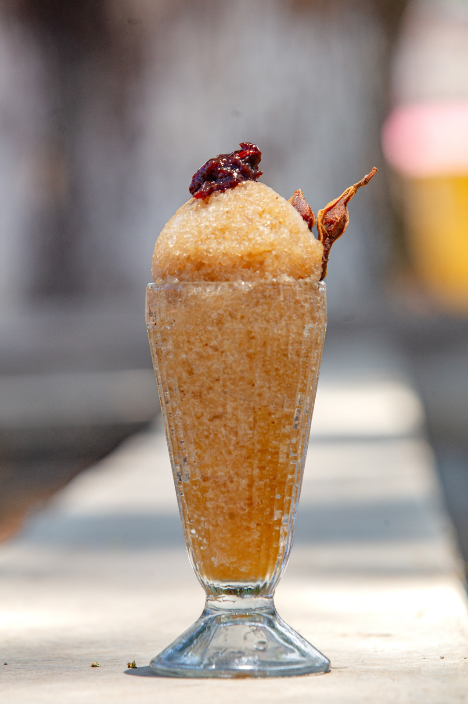

02 / GRANIZADO DE TAMARINDO
TAMARINDO · HIELO · DULZOR
Granizado de tamarindo
Esta preparación aprovecha la pulpa del tamarindo para crear una bebida fría, de sabor intenso y refrescante. La cantidad de azúcar puede ajustarse según la acidez de la fruta y el gusto de quien la prepara.
Ingredientes
- 1 taza de pulpa de tamarindo sin semillas
- 2 a 3 tazas de agua fría
- Azúcar o panela al gusto
- 2 tazas de hielo triturado
- Unas gotas de limón (opcional)
Preparación
- Si utilizas tamarindo con cáscara, retira la cáscara y deja la pulpa en agua para facilitar la separación de las semillas.
- Pasa la pulpa por un colador y presiónala para obtener el jugo. Retira las semillas y las fibras más gruesas.
- Mezcla el jugo con el agua y añade azúcar o panela poco a poco, probando hasta lograr el dulzor deseado.
- Licúa la mezcla con el hielo triturado hasta conseguir una textura granizada.
- Sirve inmediatamente, bien frío. Si lo deseas, agrega unas gotas de limón.
Receta orientativa para preparar granizado de tamarindo; las proporciones pueden variar según la acidez de la fruta y la consistencia deseada.